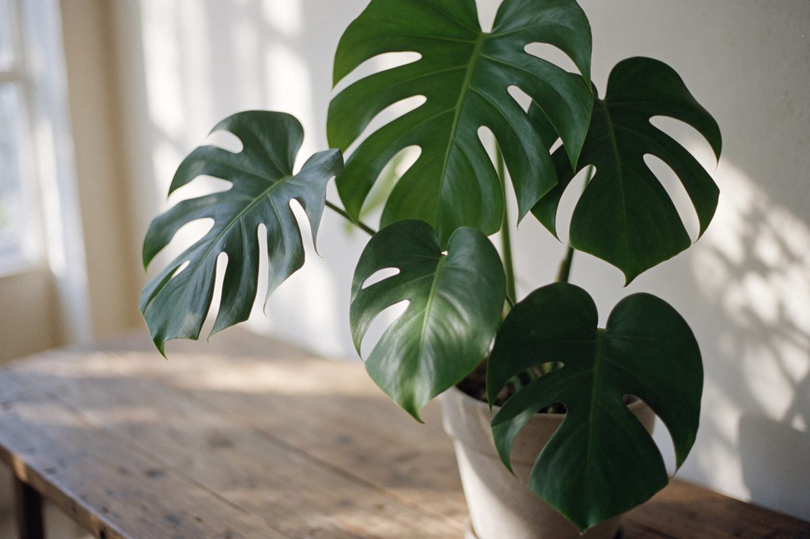
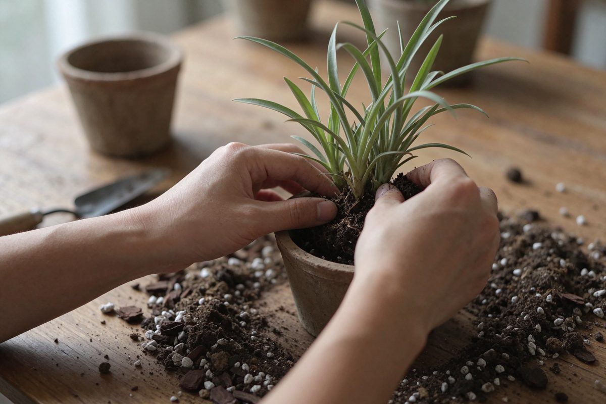

今年春天就该做的事，一直拖到立冬。理由说起来很多：新盆没买、土没配好、天气太热、 等它再长一片叶子——其实只是怕麻烦。真正让我下决心的是上周浇水时发现， 水从盆底流出来得太快了，快得像倒进了一个空杯子。根大概已经把土吃光了。

一、先看根，再决定盆
脱盆比想象中顺利。把盆侧过来，手掌托住土球，在盆壁上轻敲几圈，整团土就滑了出来。 根果然是绕着盆壁转的，一圈一圈，像盘好的毛线。有几条已经从排水孔钻出去， 白白的一截露在外面，被空气风干了尖端。
这里有个教训：盆不是越大越好。原来我用的是直径 24 厘米的盆， 这次只换了 28 厘米的。再大一号，土量翻倍，浇一次水半个月不干， 根反而容易闷。判断标准很简单——新盆比旧盆大一圈，根放进去四周留两三指宽的余地，就够了。
二、抖土、修根、别心疼
旧土我没有全留。抖掉大概三分之一，把结块的、板结的部分掰开。 顺手剪掉了三条空根和两段发黑的根尖，剪刀提前用酒精擦过。 剪完在阴凉处放了半小时，让伤口收一收再上盆。
一个小提醒：修根之后别马上浇透水，也别急着施肥。 先放在散射光的地方缓三五天，等它自己缓过来。
配土用的是老配方：泥炭土、珍珠岩、树皮，比例大概 5:2:3，再抓一把粗颗粒的火山石垫底。 龟背竹的根需要透气，土捏在手里能成团、一碰就散，这个手感就差不多了。

三、上盆之后的两周
上盆时把根舒展开，一边填土一边轻拍盆壁，让土自己落进缝隙里， 最后用手掌压实，不要用拳头砸。浇一次定根水，直到盆底流出为止。
接下来两周是最难熬的。第一天叶子有点垂，第三天最上面那片新叶的边缘开始发黄， 我一度以为要失败。第七天早上，叶柄重新立了起来。 第十天，从土里冒出一小截新的气生根，白白的，很细。
现在它在新盆里待了半个月，没有再长新叶，但也没有掉叶。 我知道它在忙别的事——在长根。等根长满了，叶子自然会来。 养植物这件事，急的部分永远不在我们能看见的地方。